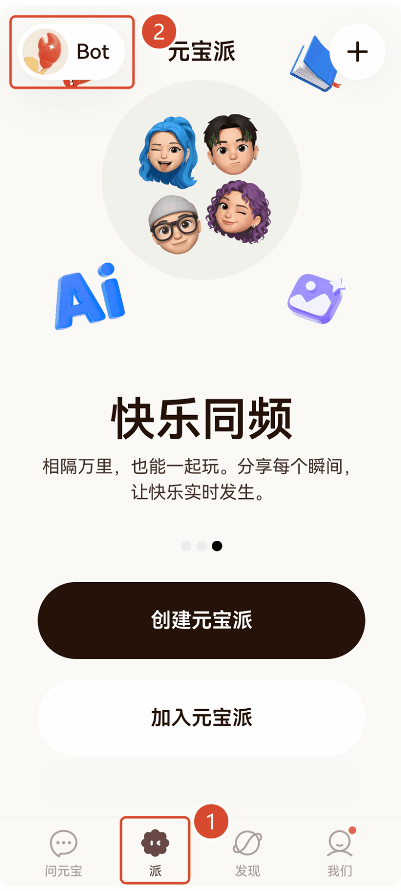
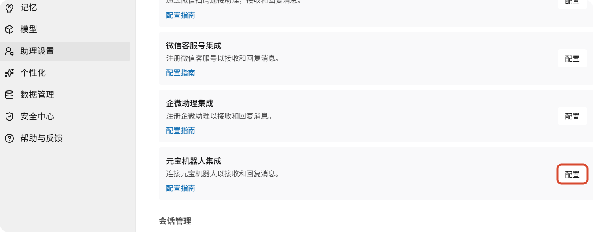
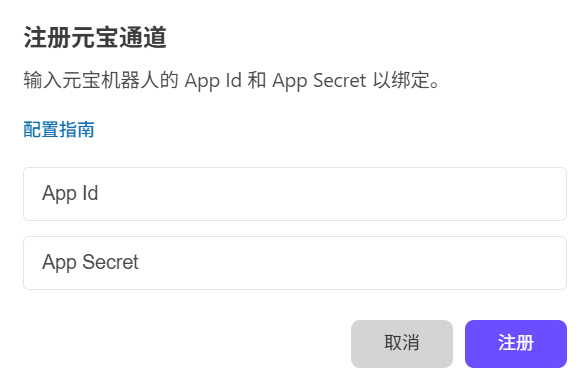
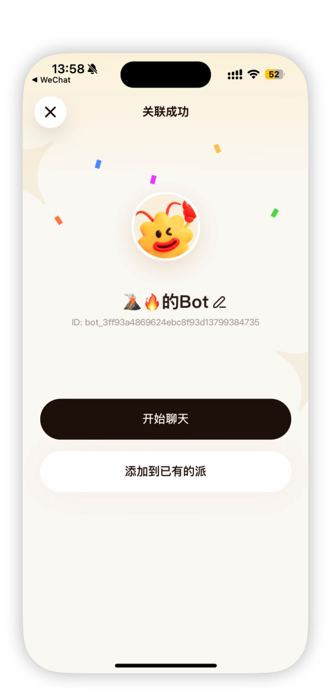

WorkBuddy 接入元宝派指南
元宝机器人集成让您可以将 WorkBuddy 添加到元宝的社区圈子（派）中，与群友共享。元宝派的 Bot 既可以在私聊中使用，也可以加入派中参与群聊。在派内向机器人发送任务指令，WorkBuddy 在电脑上自动执行，执行结果和产出物直接分享给派内成员。
元宝机器人能做什么
绑定元宝机器人后，您可以在元宝派中完成以下操作：
- 在派内 @机器人 下发任务，WorkBuddy 自动执行并将结果返回给全派成员可见
- 直接向机器人发送任务指令，随时跟进执行进度，私聊内容仅自己可见
- 将机器人添加到已有的派，在群聊中直接使用
- 派内成果共享：WorkBuddy 生成的方案、报告、设计稿等产出物，派内成员可实时查看和讨论
- 启动新任务或继续助理板块中未完成的会话
- 批准命令执行、文件修改等需要确认的操作
设置前的准备
在开始配置之前，请确认满足以下条件：
| 要求 | 说明 |
|---|---|
| WorkBuddy | 已在电脑上安装 WorkBuddy >= 4.6.4 |
| 腾讯元宝 App | 已安装腾讯元宝 App 并完成登录 |
| 网络连接 | 电脑和手机均能正常访问互联网 |
| WorkBuddy 运行中 | 电脑保持开机并运行 WorkBuddy |
提示
如果您还没有安装腾讯元宝 App ，可以在各大应用商店搜索「元宝」下载安装，支持微信登录。
连接元宝派
元宝派集成需要先在元宝 App 中创建 Bot 获取凭据，然后在 WorkBuddy 中完成绑定，最后回到元宝 App 确认关联。
第一步：在元宝 App 中创建 Bot
- 打开腾讯元宝 App
- 点击底部导航栏的 「派」 标签
- 点击顶部的 「Bot」 进入 Bot 管理页面
- 点击下方的 「关联已有 QpenClaw」 进入关联配置页面
- 当前已支持扫码关联 WorkBuddy ; 也可以通过方式2 手动配置。

第二步：在 WorkBuddy 中完成绑定
- 打开 WorkBuddy，点击左下角的头像
- 在弹出菜单中点击 「设置-助理设置」
- 在元宝扫码绑定处完成扫码绑定或找到 「元宝机器人集成」，点击右侧的 「配置」 按钮

- 在弹出的「注册元宝通道」对话框中：
- 将方式2 手动配置中获取的
AppID填入 「App Key」 输入框 - 将方式2 手动配置中获取的
AppSecret填入 「App Secret」 输入框 - 点击 「注册」 完成绑定
- 将方式2 手动配置中获取的

注意
请确保 AppID 和 AppSecret 复制完整，避免带入多余空格或遗漏字符。
第三步：在元宝 App 中完成关联
回到元宝 App 的关联页面，点击底部的 「我已操作」 按钮确认关联。
关联成功后，页面会显示 「关联成功」 提示，并展示您的 Bot 信息。您可以点击 「开始聊天」 立即体验，也可以选择 「添加到已有的派」 将 Bot 加入群聊。

开始使用
配置完成后，您就可以在元宝派中直接与机器人对话了。发送一条简单消息（例如"我来做个测试的"）进行联通测试。
以下是一些典型的元宝派使用场景：
- 私聊测试：先在私聊窗口向机器人发送任务，确保联通正常
- 派内协作：将机器人添加到一个派中，@机器人 发布任务，全派围观执行过程
如果配置正确，WorkBuddy 会接收到消息并在元宝派中返回回复。
跨设备接续工作
元宝派支持与 WorkBuddy 桌面端无缝衔接：
- 在元宝派中发起一个任务后，可以回到电脑上的 WorkBuddy 查看完整的执行过程和结果
- 在助理页面可查看远程任务的完整执行记录，包括思考过程、操作步骤、生成文件及最终结果
- 您可以在电脑上继续追问、细化任务，或在元宝派中随时查看进度
- 派内协作：任务执行过程中，派成员可实时看到进展；完成后可直接在派内围绕结果展开讨论，无需切换工具
什么来自本地电脑
当您通过元宝派向 WorkBuddy 发送任务时，处理过程发生在您的电脑上：
| 来源 | 说明 |
|---|---|
| 元宝 App | 仅发送指令、批准操作和后续消息 |
| 您的电脑 | 提供 WorkBuddy 执行任务所需的全部环境 |
电脑上的 WorkBuddy 使用您本地的项目文件、Shell 环境、凭证权限、插件和工具来执行任务。也就是说，您电脑上能做的事，通过元宝派也能远程完成。
远程任务与普通任务的区别
| 对比项 | 普通任务 | 助理（远程任务） |
|---|---|---|
| 工作目录 | 自由指定 | 固定使用助理专属文件夹 |
| 新建对话 | 支持多个并行任务 | 仅一个会话，所有远程指令集中处理 |
| 上下文管理 | 可清空历史重新开始 | 保留完整对话历史，不可清空 |
建议
本地操作优先使用主界面的普通任务；需要远程触发或统一查看记录时，再使用助理。
常见问题
机器人没有响应怎么办？
请按以下步骤排查：
- 检查 WorkBuddy 状态：确保电脑上的 WorkBuddy 正在运行，且助理服务已开启
- 检查绑定状态：确认 WorkBuddy 中「元宝机器人集成」显示为「已连接」
- 检查凭据：核对
AppID和AppSecret是否与元宝 App 中的一致 - 检查网络连接：确保电脑能够正常访问网络
注册失败怎么办？
- 确认元宝 App 中已完成 Bot 创建并获取到
AppID和AppSecret - 重新复制凭据，确保没有遗漏或多余字符
- 检查 WorkBuddy 的助理服务是否正常运行
- 如凭据已失效，可在元宝 App 中重新创建 Bot 获取新凭据
如何解除绑定？
在 WorkBuddy 的「助理设置」页面中，找到「元宝机器人集成」，点击「解绑」按钮即可解除绑定。